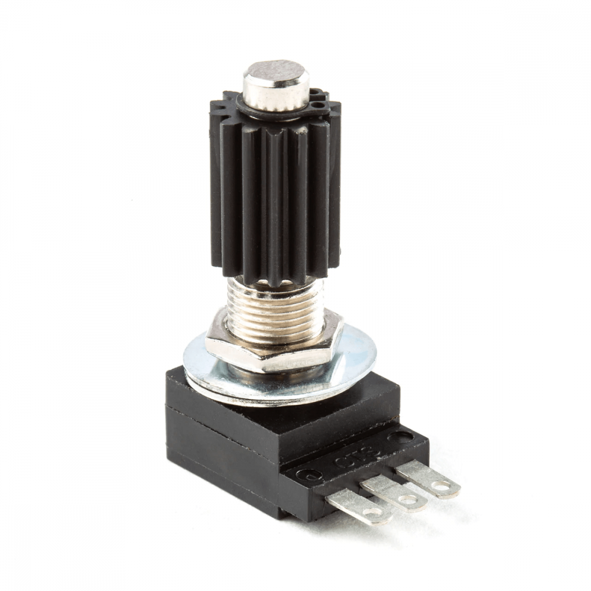

Définition et fonctionnement
Un potentiomètre est une résistance à trois bornes avec un contact coulissant ou rotatif qui forme un diviseur de tension réglable. Si seulement deux bornes sont utilisées, le potentiomètre agit comme une résistance variable ou rhéostat.
Type de composant
Passif
Symboles électroniques
Illustration
Historique
Le potentiomètre à coulisse a été inventé par Johann Christian Poggendorff (1796–1877) en 1841. Outre ses travaux sur l’électricité, il fut rédacteur des Annalen der Physik.
Quel est son rôle ?
Les potentiomètres permettent de convertir un déplacement ou une rotation vers d’autres grandeurs physiques (résistance, tension, courant). Ce principe permet de réaliser des réglages précis.
Utilisation d’un potentiomètre
Les potentiomètres sont couramment utilisés dans les circuits pour garantir l’interaction avec l’utilisateur ou les ajustements par le professionnel de l’électronique.